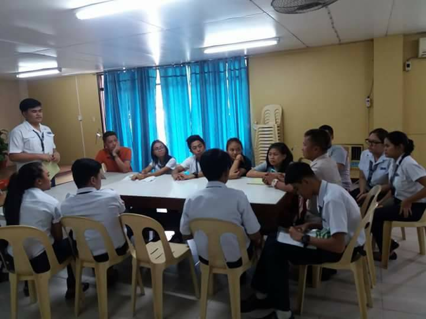
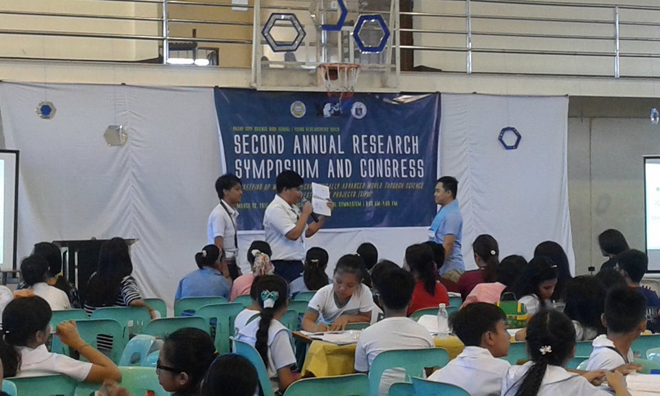
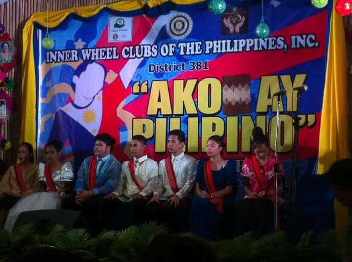
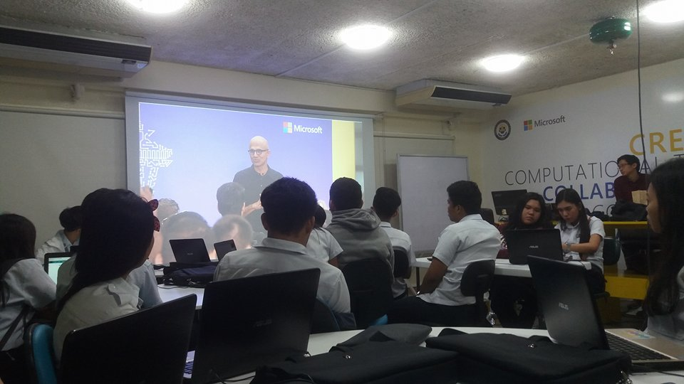
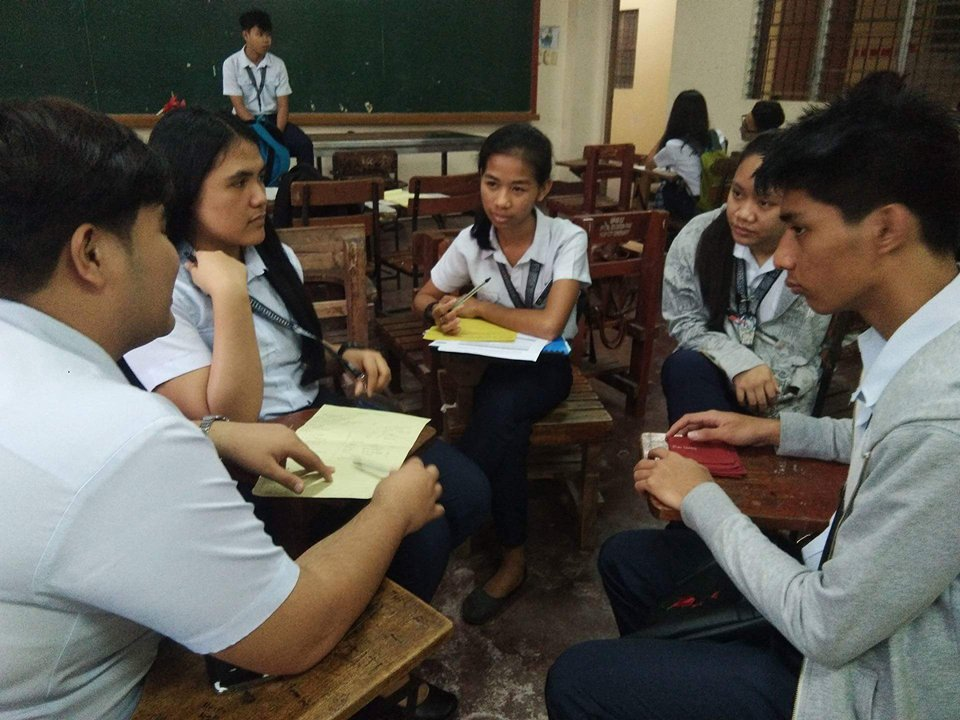
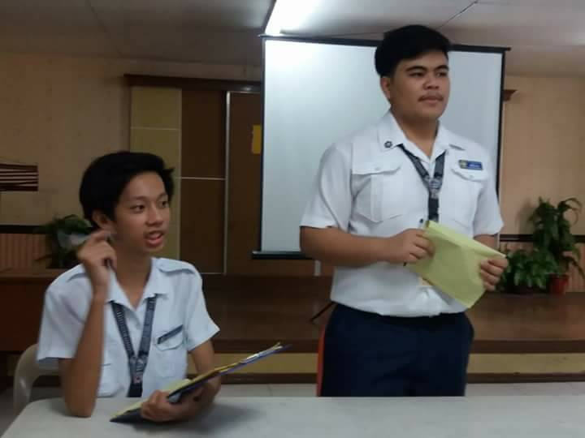

Humanities and Social Sciences
Humanities and Social Sciences strand offers subjects that equip students with the ample knowledge of the society and its people.
It encompasses religion, social sciences, applied social sciences, and many other specialized subjects that enable learners to understand the society and its people through in-depth classroom discussion and intellectual discourse.
This strand also exposes students to public speaking, fiction and non fiction writing and community engagement.
Lastly, HUMSS strand helps students tolerate differences, appreciate diversity, and engage in camaraderie as it enlightens them with the social trends and reality, thus broadening their horizon and overall perception of the world
.College Courses
- Mass Communication
- AB Communication
- AB Political Science
- BS Education
Program
- BS Psychology
- BS Sociology
- Law
Career Opportunities
- Journalist, Psychologist, Social Worker, Lawyer, Sociologist, Diplomat, Broadcaster, Teacher, Legal Researcher, Novelist, Guidance Counselor, School Principal, Political Analyst, and Judicial Clerk